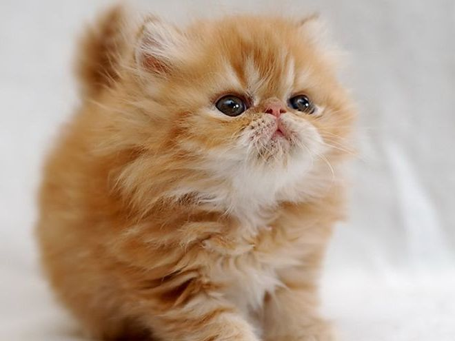

— истинно длинношерстная кошка и одна из самых популярных пород в США. Отличительные особенности: круглая плоская мордочка, необычные глаза и роскошная шерсть. В периоды между линьками шерсть очень густая, струящаяся, особенно длинная в области шеи. Короткий хвост тоже покрыт длинной шерстью. У персидской кошки разнообразный окрас: однотонный и черепаховый, дымчатый, встречается рисунок из пятен и полос.
Характер:
Персы очень спокойные и довольно дружелюбные. Они ладят с любым взрослым, но предпочитают, чтобы их не напрягали излишним вниманием. Любит, когда дети расчесывают ее и гладят, но едва ли поиграет с ними в шумные игры. У персидской кошки негромкий музыкальный голос, но главное ее средство коммуникации — большие выразительные глаза. Кошки этой породы не любят высоту и склонны держаться поближе к полу. Они с радостью поиграют с игрушкой-дразнилкой, но большую часть времени посвятят отдыху на любимой лежанке.